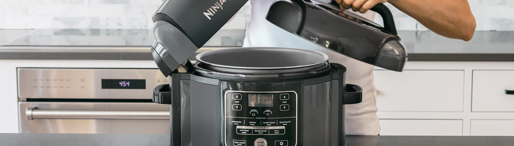

Review on technology related resource:

Review: Ninja Foodi multi-cooker
Recently ninja foodie multi-cooker has been up in the market because of its advanced features and functions. This device has multiple features; it works as slow cooker, pressure cooker, grill and air fryer. It works as a slow cooker as good amount of water will make the food tenderising whereas less amount of water will make the food dry and chewy. It wroks as a pressure cooker as it escapes the hot steam after gettind a definite temperature. It has a grilling feature which works in both high and low temperature settings. It also works as an air fryer which takes let oil to fry any snack perfectly.